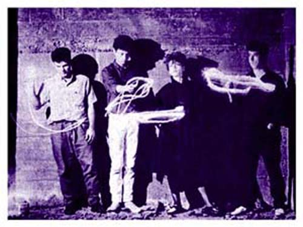

Arte no Escuro (RIP)
1985-1988
Marielle - Vocal
Paulo Coelho - Guitarra
Pedro Hiena - Baixo
Adriano - Bateria
Formada em 1985, o Arte no Escuro foi uma das primeiras bandas influenciadas pela música inglesa dos anos 80. Música feita por bandas como Joy Division, Bauhaus, Gang of Four, Magazine, Sisters of Mercy, Cocteau Twins e The Cure.
A formação original tinha Lui nos vocais. Em um memorável show no ateliê da Faculdade de Arquitetura da UnB, o público chegou a correr da frente do palco com medo de ser pintado com a tinta negra que Zezinho Flores (Finis Africae), havia dado de presente e que Lui resolveu atirar em si mesmo enquanto cantava "Beije-me Callboy". Com a mudança de Lui para o Rio a banda convidou Marielle, que havia saido do Escola de Escândalos, para assumir os vocais. A segunda e melhor fase do Arte no Escuro começa aqui.
O Arte no Escuro dividia a sala de ensaios no então Radio Center com as bandas Finis Africae e Escola de Escândalos e não era raro acontecer jams com Fejão, guitarrista do Escola, ou versões para músicas do Joy Division e Gang of Four com Bernardo, também do Escola, nos vocais.


Depois de vários shows o Arte no Escuro conquistou um público fiel em BSB e produziu uma fita demo que acabou na Rádio Fluminense FM do Rio de Janeiro. A música "Beije-me Callboy", a mais conhecida da banda, chamou a atenção de gravadoras após ser votada uma das melhores músicas pelos ouvintes da rádio em 1986.
Após alguns shows no Rio, São Paulo, e outras cidades do pais, a gravadora EMI-Odeon contratou a banda em 1987 para a gravação de um LP. Foram vendidas pouco mais de três mil e quinhentas cópias e o LP hoje é tratado como raridade sendo encontrado em poucas rock shops em SP. Em 1988 a banda foi descartada pela EMI. Com o sucesso de vendas alcançado pelas bandas de BSB dos anos 80, o Arte no Escuro chegou a receber ofertas para retornar ao estúdio e para se apresentar em shows, ofertas que a banda descartou com digninade.